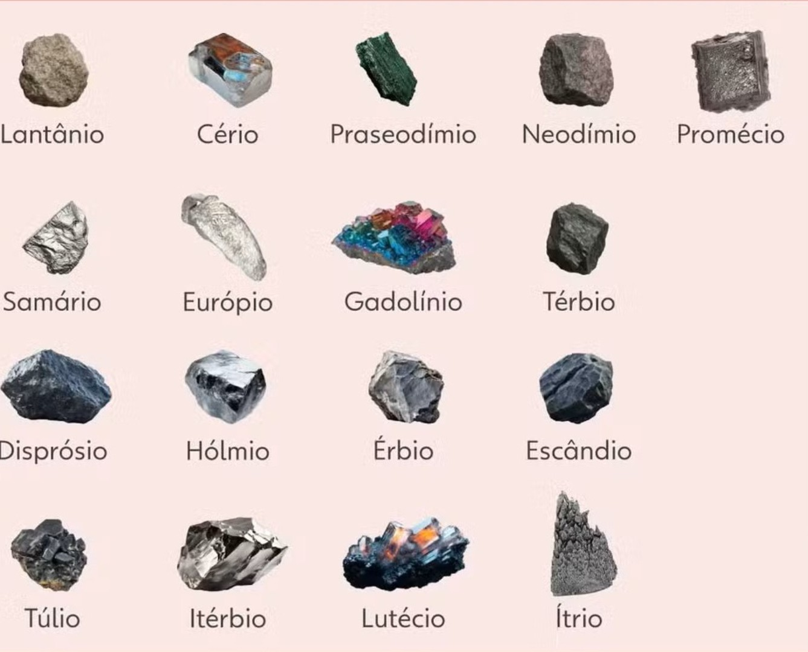

O que é terras raras?
Terras raras
São um grupo de 17 elementos químicos que, apesar do nome, não são particularmente raros na crosta terrestre, mas sim difíceis de extrair e separar dos minerais que os contêm, o que os torna caros e complexos de produzir.
Por que são importantes?
É utilizado em diversas aplicações industriais, como em ligas metálicas, televisores antigos e LEDs. O nome é uma homenagem à localidade sueca de Ytterby, onde foi descoberto em 1794.
São usados em diversas aplicações de alta tecnologia, como:
Eletrônicos: Telas de celulares, TVs e lâmpadas de LED.
Veículos elétricos e energias renováveis: Em superímãs para motores de carros elétricos e geradores de turbinas eólicas.
Defesa e aeroespacial: Equipamentos militares e satélites.
Origem
Os elementos que constituem o grupo das terras-raras foram inicialmente isolados sob a forma de óxidos, recebendo então a designação de "terras", à época a denominação genérica dada aos óxidos da maioria dos elementos metálicos. Por apresentarem propriedades muito similares, serem apenas conhecidos em minerais oriundos da Escandinávia e por serem de difícil separação, foram considerados "raros", daí resultando a denominação "terras-raras", ainda hoje utilizada, apesar de alguns deles serem comparativamente abundantes na composição crostal da Terra.
Características e usos
As formas elementares das terras-raras são metais tipicamente macios, maleáveis e dúcteis, geralmente reactivos, especialmente a temperaturas elevadas ou quando finamente divididos, com cores que variam de cinza escuro a prateado. As principais fontes económicas de terras-raras são os minerais bastnasita, monazita e loparita e as argilas lateríticas. Apesar da sua abundância relativa elevada, os minerais de terras-raras são mais difíceis de minerar e de extrair do que fontes equivalentes de metais de transição, devido em parte às suas semelhanças químicas. Esta dificuldade torna os metais de terras-raras relativamente caros, pelo que o seu uso industrial foi limitado até serem desenvolvidas técnicas de separação de alto rendimento, tais como a troca iónica, cristalização fraccional e extracção líquido-líquido nas décadas de 1950 e de 1960.[3]
Terras raras no meio político
As terras raras se tornaram um ponto central na política global devido à sua importância estratégica para tecnologias avançadas e defesa, e ao quase monopólio da China sobre a cadeia de produção. Essa situação gera tensões comerciais e motiva diversas nações a buscar independência na cadeia de suprimentos.
Principais aspectos políticos e geopolíticos
•Domínio da China: A China detém o controle de cerca de 92% do processamento global de terras raras, apesar de não possuir a maioria das reservas mundiais. Esse domínio é resultado de investimentos de longo prazo em toda a cadeia de valor, conferindo a Pequim uma forte vantagem geopolítica.
•Vulnerabilidade e segurança nacional: A dependência de um único fornecedor, a China, cria uma vulnerabilidade significativa para países como os Estados Unidos e nações europeias. As terras raras são cruciais para a fabricação de mísseis, caças, drones e outros equipamentos militares.
•Restrições de exportação chinesas: Em 2025, a China impôs novas restrições às exportações de elementos de terras raras e ímãs permanentes, mirando especificamente o setor de defesa de outros países, como os EUA. A medida demonstra como esses minerais podem ser usados como arma econômica e estratégica.
•Disputas comerciais e tarifárias: As terras raras são um ponto de atrito nas negociações comerciais entre China e Estados Unidos, com acusações de atraso na aprovação de licenças de exportação por parte de Pequim. Em 2025, o ex-presidente Donald Trump chegou a sinalizar possíveis tarifas de até 100% sobre produtos chineses em resposta a essas restrições.
•Diversificação da cadeia de suprimentos: A vulnerabilidade exposta pelo controle chinês motivou potências globais a buscarem fontes alternativas e a investir em projetos de mineração e processamento de terras raras fora da China. Regiões como a África e a América Latina ganharam destaque nesse cenário.
A política das terras raras no Brasil:
•Reservas estratégicas: O Brasil possui uma das maiores reservas de terras raras do mundo, com 22 milhões de toneladas, o que lhe confere um papel estratégico no cenário global.
Busca por autonomia: O governo brasileiro tem demonstrado interesse em desenvolver uma política nacional para a exploração e processamento das terras raras, buscando agregar valor à produção e reduzir a dependência de tecnologia externa. Em 2025, foi lançado um edital para contratar uma consultoria internacional para desenhar essa política.
•Interesse dos EUA: Os Estados Unidos têm se aproximado do Brasil em busca de diversificação da cadeia de suprimentos. As reservas brasileiras são vistas como uma oportunidade para reduzir a dependência de minerais críticos vindos da China. A questão das terras raras chegou a ser discutida como um possível ativo diplomático para destravar negociações com os EUA.
•rescimento das exportações para a China: Apesar do interesse ocidental em diversificar o fornecimento, as vendas de terras raras brutas do Brasil para a China triplicaram no primeiro semestre de 2025 em comparação com o ano anterior, evidenciando a necessidade de desenvolver a capacidade de processamento no país para agregar valor.
•Megajazidas: Minas Gerais está no centro das discussões sobre a exploração de terras raras, com a possibilidade de explorar uma das maiores jazidas do mundo no estado. Isso levanta debates sobre os impactos ambientais e econômicos da mineração.
Tabela sobre cada elemento que compoem as terras-raras
| Nome do elemento | Informações |
|---|---|
| Lantânio | É um metal mole, prateado e muito reativo, com número atômico 57, pertencente ao grupo dos lantanídeos e "terras raras" da tabela periódica. É um elemento chave em baterias para carros híbridos, na produção de vidros para lentes de alta qualidade e como catalisador em diversas indústrias, como no craqueamento do petróleo. O lantânio é encontrado na Terra em baixas concentrações na crosta terrestre, associado a minerais de terras raras como monazita, bastnasita e alanita. Principais países produtores desses minerais e, consequentemente, de lantânio, incluem China, Estados Unidos, Austrália e Brasil. |
| Cérios | símbolo Ce, número atômico 58 é um metal macio, branco-prateado e dúctil, pertencente ao grupo das terras raras (lantanídeos). É o mais abundante entre os lantanídeos e é encontrado em diversos minerais. Suas principais aplicações incluem o uso como catalisador para reduzir emissões de gases em escapamentos de automóveis, na fabricação de isqueiros e em ligas metálicas, como o metal misch (misk). |
| Praseodímio | com número atômico 59, encontrado naturalmente em minerais como a monazita e a bastnasitaÉ um metal macio, prateado e maleável, usado na fabricação de ligas metálicas de alta resistência, corantes para vidros e cerâmicas, e como componente em pedras de isqueiros. Foi isolado em 1885 pelo químico austríaco Carl Auer von Welsbach, que o separou do didímio. |
| Neodímio | é um elemento químico e a principal matéria-prima para a fabricação de ímãs permanentes de alta força magnética, conhecidos como ímãs de neodímio. Esses ímãs são usados em diversas aplicações, como motores de carros elétricos, equipamentos eletrônicos e em projetos de bricolagem. A sua força magnética é tão grande que, se não forem manuseados com cuidado, podem causar acidentes ao colidir. |
| Promécio | elemento químico radioativo, pertencente ao grupo das terras raras, com número atômico 61. É um metal macio, prateado e maleável que não ocorre naturalmente em grandes quantidades, sendo produzido artificialmente em reatores nucleares. Suas principais aplicações são em baterias nucleares de curta duração e em medidores de espessura. |
| Samário | é um elemento químico de número atômico 62, pertencente ao grupo dos lantanídeos (terras raras), descoberto em 1879 por Lecoq de Boisbaudran. É um metal prateado usado na fabricação de ímãs permanentes de alta resistência (em ligas com cobalto), lasers, vidros ópticos que absorvem infravermelho e em aplicações médicas e nucleares (como isótopo radioativo para tratar dor óssea e em barras de controle de reatores nucleares). |
| Európio | é um elemento químico com símbolo Eu e número atômico 63, pertencente à série dos lantanídeos É um metal branco-prateado, reativo e maleável, que, devido às suas propriedades luminescentes e magnéticas, é amplamente utilizado em telas de smartphones e TVs, lâmpadas fluorescentes, dispositivos de segurança, lasers e em tecnologias como a fabricação de superimãs e chips de memória quântica. |
| Gadolínio | é um elemento químico das terras raras, com número atômico 64, usado principalmente como agente de contraste em exames de ressonância magnética (RM). Para ser usado em segurança, o gadolínio é quimicamente ligado a um "quelante", que evita sua toxicidade e facilita sua excreção pelo corpo. Embora o gadolínio seja essencial para o diagnóstico médico, seu uso é contraindicado em certos pacientes com insuficiência renal grave e em crianças pequenas devido ao risco de complicações como a fibrose nefrogênica sistêmica. |
| Térbio | elemento químico metálico de cor prateada, número atômico 65, que pertence ao grupo das terras raras (lantanídeos). Para ser usado em segurança, o gadolínio é quimicamente ligado a um É maleável e dúctil, encontrado na natureza em minerais como a monazita e a euxenita. O térbio é usado na produção de ligas metálicas, dispositivos eletrônicos, lasers e em aplicações de iluminação. |
| Disprósio | elemento químico de número atômico 66, símbolo Dy, pertencente ao grupo das terras raras, com brilho prateado e metálico. É usado em materiais para lasers, ímãs de alta performance (como os de turbinas eólicas e ímãs de neodímio-ferro-boro), em reatores nucleares e como componente de ligas magnéticas especiais. Foi identificado pela primeira vez em 1886, mas só foi isolado em forma pura na década de 1950. de ligas metálicas, dispositivos eletrônicos, lasers e em aplicações de iluminação. |
| Hólmio | é um elemento químico das terras raras, com número atômico 67. É um metal prateado, macio e maleável, que pode ser usado na fabricação de lasers, em ligas metálicas e em reatores nucleares. O nome é derivado de "Holmia", o nome latino para Estocolmo, Suécia. |
| Érbio | é um elemento químico metálico, pertencente à família das terras raras (lantanídeos), com número atômico 68. É um metal macio, prateado e maleável, usado em diversas aplicações como em lasers médicos, filtros fotográficos e para dar cor rosa a vidros e cerâmicas. |
| Túlio | é um elemento químico de número atômico 69, símbolo Tm, pertencente ao grupo dos lantanídeos (metais de terras raras). É um metal prateado, macio e denso, com algumas aplicações, principalmente na medicina (aparelhos de raios-X portáteis) e em lasers, devido à sua escassez e alto custo. Foi descoberto em 1879 pelo químico sueco Per Teodor Cleve. |
| Itérbio | é um elemento químico, um metal de número atômico 70, classificado como um lantanídeo ou metal terra-rara. Possui brilho prateado, é macio, maleável e dúctil. Foi nomeado em homenagem à mina de Ytterby, na Suécia, que também deu nome a outros elementos químicos como o ítrio, o térbio e o érbio. |
| Lutécio | um metal branco-prateado com número atômico 71. Ele pertence ao grupo dos lantanídeos (terras raras), é o último elemento dessa série e tem aplicações em áreas como a indústria do petróleo e em tratamentos contra o câncer de próstata. |
| Escândio | é um elemento químico de número atômico 21, que se classifica como um metal de transição e pertence ao grupo das terras raras. Ele é usado em ligas metálicas leves, equipamentos eletrônicos, lasers e lâmpadas de alta intensidade. Foi nomeado em homenagem à Escandinávia, a região onde foi descoberto. |
| Ítrio | é um metal de transição prateado, classificado como um elemento de terras raras, semelhante aos lantanídeos. É utilizado em diversas aplicações industriais, como em ligas metálicas, televisores antigos e LEDs. O nome é uma homenagem à localidade sueca de Ytterby, onde foi descoberto em 1794. |